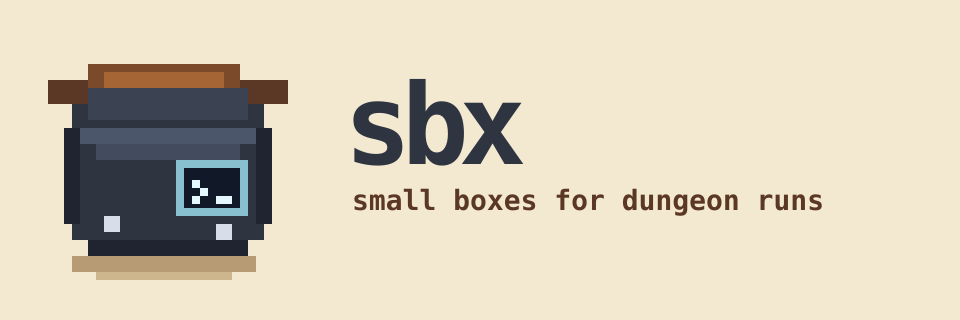

▣
Disposable VM
Create, enter, inspect, and throw away a QEMU-backed SmolVM sandbox when the run is done.
sbx sends your coding agent into a disposable VM, so you can explore risky code safely without handing the dungeon your host credentials.

Coding agents are powerful, but unknown repositories are dungeons. Build scripts, package installs, shell commands, and generated patches can all hide traps. sbx lets the agent explore inside a small box instead of your host machine.
Create, enter, inspect, and throw away a QEMU-backed SmolVM sandbox when the run is done.
Run Pi, Claude, or Codex inside the guest while keeping your host environment out of reach by default.
Host credentials are not copied unless you explicitly ask for them. Safe Git identity forwarding is separate.
Use a preset image or a local ready-to-run image for your agent.
sbx run creates or starts the
VM, exposes auth callback forwarding, and
attaches to the agent.
Mount your project, run commands, test patches, and keep risky effects inside the guest.
Stop, recreate, or destroy the sandbox when the dungeon has been mapped.
# install the released tool and check the defaults $ uv tool install git+https://github.com/nueces/sbx.git@v0.2.3 $ sbx doctor # select your quest and jump into it $ cd into/your/project # create if missing, start if stopped, attach to your Agent $ sbx run the-quest # open a shell in an existing box $ sbx shell the-quest # throw away the dungeon state $ sbx recreate the-quest --force
sbx run [NAME] — main agent
workflow
sbx create [NAME] — provision
without attaching
sbx shell [NAME] — open a guest
shell
sbx recreate [NAME] — delete and
start fresh
sbx network status [NAME] — inspect
tunnels
sbx completion SHELL — generate
shell completions
sbx image ls — list local
ready-to-run images
sbx image build-debian — build a
local Debian/Pi image
Put the route in .sbx.toml — or let
the first sbx run/sbx create
bootstrap a minimal file for a new VM: name, agent,
and selected options. The next dungeon run starts
from the same map, so teammates and future-you can
reproduce the same sandbox path.
[sbx] agent = "pi" name = "project-sbx" project_path = "." mount = ["/home/me/code/tooling"] writable_mounts = true run_user = "agent" copy_host_credentials = false git_config = true
Build a local Debian/Pi image once with
sbx image build-debian, then reuse it
in your dungeon maps. Cast the build spell with
--with-docker when the run needs extra
power, like rootless Docker.
A good dungeon tool should be easy to reach for.
sbx keeps the command loop small and memorable:
run to enter, shell to inspect,
recreate to reset, and rm when the
quest is over. The safe route becomes muscle memory instead
of another ritual to remember.
sbx is isolation, not magic. Only copy host credentials when you mean it. Treat writable mounts as shared ground between the adventurer and the dungeon.
Package-auth mediation is in progress. The goal is to let
tools like uv sync reach authenticated package
indexes from inside the VM while real package tokens stay on
the host.
This feature is still being hardened. When it lands, the intended flow is: the guest receives a placeholder credential, and a host-side proxy swaps it only for the configured package path.